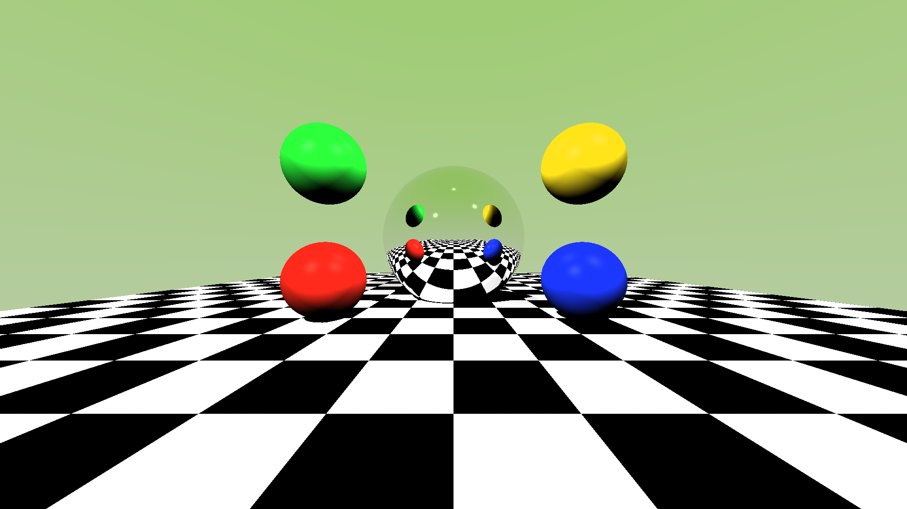

Ray Tracing Rendering
Ray tracing is a rendering technique that simulates the way light interacts with objects to produce realistic images. Below we explore four key aspects of ray tracing.
1. Diffuse Color (Lambertian Reflection)
Diffuse reflection simulates how rough surfaces scatter light equally in all directions. This is based on Lambert's cosine law: the intensity of reflected light is proportional to the cosine of the angle between the surface normal and the light direction.
The formula is: I = k_d * I_light * max(0, N . L)
k_d- diffuse reflection coefficient (material color)N- surface normal vectorL- light direction vectorN . L- dot product gives cosine of angle
This creates the soft, matte appearance seen on surfaces like paper, chalk, or unpolished wood.

2. Phong Shading Model
The Phong reflection model combines three components to create realistic lighting:
- Ambient - constant background illumination:
I_a * k_a - Diffuse - Lambertian reflection (see above):
I_d * k_d * (N . L) - Specular - shiny highlights:
I_s * k_s * (R . V)^n
The specular term creates bright highlights on shiny surfaces. The exponent n (shininess) controls how tight the highlight is - higher values create smaller, sharper highlights.
Full equation: I = I_a*k_a + I_d*k_d*(N.L) + I_s*k_s*(R.V)^n
3. Refractive Materials
Refraction occurs when light passes through transparent materials like glass or water. The light bends according to Snell's Law:
n_1 * sin(theta_1) = n_2 * sin(theta_2)
n_1, n_2- indices of refraction for each mediumtheta_1- angle of incidencetheta_2- angle of refraction
Common indices: Air (1.0), Water (1.33), Glass (1.5), Diamond (2.42)
When light travels from a denser to less dense medium at a steep angle, total internal reflection occurs - no light passes through.

4. Reflective Materials
Perfect reflection (mirror-like surfaces) follows the law of reflection: the angle of incidence equals the angle of reflection.
The reflected ray direction is calculated as: R = I - 2(N . I)N
I- incident ray directionN- surface normalR- reflected ray direction
In ray tracing, we recursively trace reflected rays to capture multiple bounces. The Fresnel effect makes surfaces more reflective at grazing angles - this is why you can see through a window straight on, but it reflects like a mirror when viewed at an angle.
3x3 Grid Layout (divs and spans only, no CSS)
This grid uses only the display behavior of div (block) and span (inline) elements:
CSS Box Model Gallery
Each row demonstrates different border, margin, and padding values:
Row 1: Border Variations
Row 2: Margin Variations
Row 3: Padding Variations
Font Size Units Comparison
- 16px (absolute) - Use for fixed-size elements like icons or when pixel-perfect sizing is needed, e.g., a button that must be exactly 16px tall.
- 1rem (relative to root) - Use for consistent sizing across components, e.g., body text that scales with user's browser settings.
- 1.2em (relative to parent) - Use for proportional scaling within a component, e.g., making a heading 1.2x larger than its container's font.
- 120% (relative percentage) - Use similar to em, e.g., slightly larger text in a callout box that scales with parent.
- 2vw (viewport width) - Use for responsive typography that scales with screen size, e.g., hero text that fills the viewport proportionally.
- large (keyword, relative) - Use for semantic sizing without specific values, e.g., emphasizing text in a way that respects user preferences.
CSS Positioning Demonstration
This section demonstrates four positioning options:
Elements flow normally in the document. Use when no special positioning is needed.
Offset from normal position. Use when you need to nudge an element or create a positioning context for absolute children.
Removed from flow, positioned relative to nearest positioned ancestor. Use for overlays, tooltips, or precise placement.
Note: The footer below uses position: sticky (or fixed fallback) to stay at the bottom of the viewport.